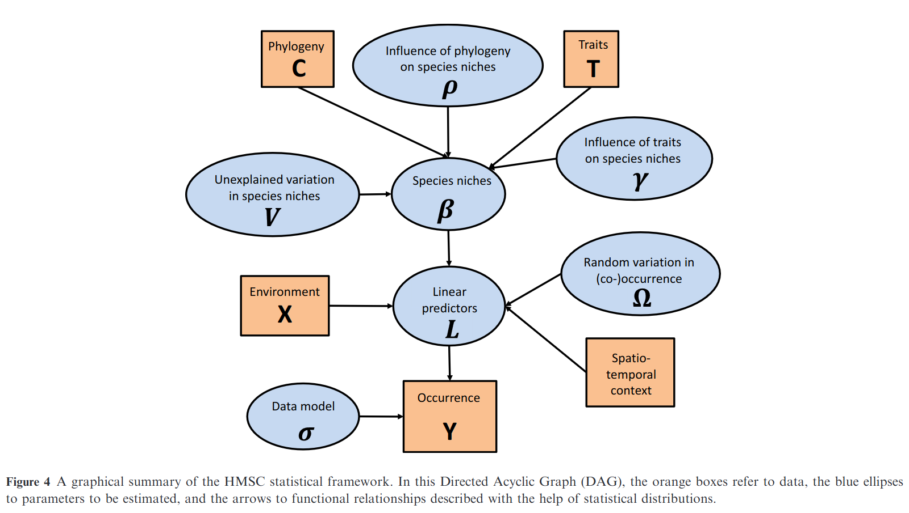

STOC: Optimal Experimental Design
![]()
Introduction
OED
Optimal Experimental Design (or OED for short) is a way for designing experiments that aims at maximising information gain while minimising a cost function. This cost function can encompass prediction uncertainty, material cost, deployment time… it is up to the user to select the parameters to optimise.
The key concept is that not all observations are equally informative.
This concept1 can be particularly interesting when working with participatory science datasets. In the BIODICAPT research project, we are working with voluntary participants but cannot make use of all of them (due to time, logistical and budget constraint). In this context, pre-studying the sampling designs for our experiments car enable us to optimise data collection.
BIODICAPT
BIODICAPT is a French research project that aims at monitoring biodiversity of agricultural lands on a large (aka national) scale through the use of various recording devices.
BIODICAPT started in early-2026, the first results (data extraction of species distributions) are not expected before late-2026 or early-2027. However, deployment on lands of voluntary agricultors is due late-2026. Therefore, to prepare the upcoming sampling design, we make use of simulated species distributions.
Strategy
We are trying to answer two questions:
- Which points are the most informative in the 500ENI network, given our previous data collection and our constraints?
- Which points enable us to detect an effect of actionable variables?
To answer these questions using OED, we must use models (because their predictions is what will enable us to plan our sampling designs). We are using Species Distribution Models (SDM) to model the distribution of simulated species over France’s metropolitan area. In particular, we will be using HMSC, which is a joint-SDM (JSDM) [1]. These models make use of several species distributions to find latent links between them, which supposedly improves the prediction accuracy2.
Relative to our model, our initial questions become:
- Which sampling design minimises model uncertainty?
- Which sampling design enable us to best estimate the effect of our actionable variables?
To answer them, we will use a simulated dataset of species distributions made using the virtualspecies package [2]. The distributions are based on environmental variables extracted from various sources (CORINE Land Cover 2018, CHELSA model, NASA NDVI, …) and will be presence-absence of species (typical output expected from acoustic detections).
HMSC
HMSC (Hierarchical Modelling of Species Communities) is a JSDM developped by Ovaskainen et al. (2017) [1], it is distributed as an open-source R-package on GitHub [3].
It is undoubtebly the most widely used JSDM in the last years. Its principle is summarised in the next figure, extracted from its original publication [1]:

GJAM
Only HMSC has been implemented into our code for now. GJAM is under consideration, as well as other SDMs: RF, SSDM, deep-SDMs, …
↳ This section will be updated when new results are available.
Material and Methods
This report is still under construction, come back later!